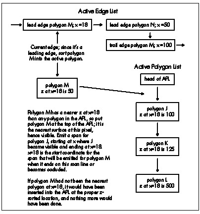
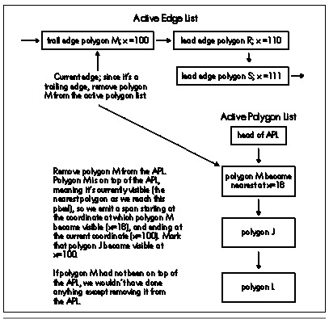

| Previous | Table of Contents | Next |
For each scan line, a z-sorted active polygon list (APL) is maintained. The x-sorted AEL is stepped through in order. As each new edge is encountered (that is, as each polygon starts or ends as we move left to right), the associated polygon is activated and sorted into the APL, as shown in Figure 66.3, or deactivated and removed from the APL, as shown in Figure 66.4, for a leading or trailing edge, respectively. If the nearest polygon has changed (that is, if the new polygon is nearest, or if the nearest polygon just ended), a span is emitted for the polygon that just stopped being the nearest, starting at the point where the polygon first because nearest and ending at the x coordinate of the current edge, and the current x coordinate is recorded in the polygon that is now the nearest. This saved coordinate later serves as the start of the span emitted when the new nearest polygon ceases to be in front.
Don’t worry if you didn’t follow all of that; the above is just a quick overview of edge-sorting to help make the rest of this chapter a little clearer. My thorough discussion of the topic will be in Chapter 67.
The spans that are generated with edge-sorting are exactly the same spans that ultimately emerge from span-sorting; the difference lies in the intermediate data structures that are used to sort the spans in the scene. With edge-sorting, the spans are kept implicit in the edges until the final set of visible spans is generated, so the sorting, clipping, and span emission is done as each edge adds or removes a polygon, based on the span state implied by the edge and the set of active polygons. With span-sorting, spans are immediately made explicit when each polygon is rasterized, and those intermediate spans are then sorted and clipped against other the spans on the scan line to generate the final spans, so the states of the spans are explicit at all times, and all work is done directly with spans.
Both span-sorting and edge-sorting work well, and both have been employed successfully in commercial projects. We’ve chosen to use edge-sorting in Quake partly because it seems inherently more efficient, with excellent horizontal coherence that makes for minimal time spent sorting, in contrast with the potentially costly sorting into linked lists that span-sorting can involve. A more important reason, though, is that with edge-sorting we’re able to share edges between adjacent polygons, and that cuts the work involved in sorting, clipping, and rasterizing edges nearly in half, while also shrinking the world database quite a bit due to the sharing.

Figure 66.3 Activating a polygon when a leading edge is encountered in the AEL.
One final advantage of edge-sorting is that it makes no distinction between convex and concave polygons. That’s not an important consideration for most graphics engines, but in Quake, edge clipping, transformation, projection, and sorting have become a major bottleneck, so we’re doing everything we can to get the polygon and edge counts down, and concave polygons help a lot in that regard. While it’s possible to handle concave polygons with span-sorting, that can involve significant performance penalties.

Figure 66.4 Deactivating a polygon when a trailing edge is encountered in the AEL.
Nonetheless, there’s no cut-and-dried answer as to which approach is better. In the end, span-sorting and edge-sorting amount to the same functionality, and the choice between them is a matter of whatever you feel most comfortable with. In Chapter 67, I’ll go into considerable detail about edge-sorting, complete with a full implementation. I’m going the spend the rest of this chapter laying the foundation for Chapter 67 by discussing sorting keys and 1/z calculation. In the process, I’m going to have to make a few forward references to aspects of edge-sorting that I haven’t yet covered in detail; my apologies, but it’s unavoidable, and all should become clear by the end of Chapter 67.
Now that we know we’re going to sort edges, using them to emit spans for the polygons nearest the viewer, the question becomes: How can we tell which polygons are nearest? Ideally, we’d just store a sorting key in each polygon, and whenever a new edge came along, we’d compare its surface’s key to the keys of other currently active polygons, and could easily tell which polygon was nearest.
That sounds too good to be true, but it is possible. If, for example, your world database is stored as a BSP tree, with all polygons clipped into the BSP leaves, then BSP walk order is a valid drawing order. So, for example, if you walk the BSP back-to-front, assigning each polygon an incrementally higher key as you reach it, polygons with higher keys are guaranteed to be in front of polygons with lower keys. This is the approach Quake used for a while, although a different approach is now being used, for reasons I’ll explain shortly.
If you don’t happen to have a BSP or similar data structure handy, or if you have lots of moving polygons (BSPs don’t handle moving polygons very efficiently), another way to accomplish your objectives would be to sort all the polygons against one another before drawing the scene, assigning appropriate keys based on their spatial relationships in viewspace. Unfortunately, this is generally an extremely slow task, because every polygon must be compared to every other polygon. There are techniques to improve the performance of polygon sorts, but I don’t know of anyone who’s doing general polygon sorts of complex scenes in realtime on a PC.
An alternative is to sort by z distance from the viewer in screenspace, an approach that dovetails nicely with the excellent spatial coherence of edge-sorting. As each new edge is encountered on a scan line, the corresponding polygon’s z distance can be calculated and compared to the other polygons’ distances, and the polygon can be sorted into the APL accordingly.
Getting z distances can be tricky, however. Remember that we need to be able to calculate z at any arbitrary point on a polygon, because an edge may occur and cause its polygon to be sorted into the APL at any point on the screen. We could calculate z directly from the screen x and y coordinates and the polygon’s plane equation, but unfortunately this can’t be done very quickly, because the z for a plane doesn’t vary linearly in screenspace; however, 1/z does vary linearly, so we’ll use that instead. (See Chris Hecker’s 1995 series of columns on texture mapping in Game Developer magazine for a discussion of screenspace linearity and gradients for 1/z.) Another advantage of using 1/z is that its resolution increases with decreasing distance, meaning that by using 1/z, we’ll have better depth resolution for nearby features, where it matters most.
| Previous | Table of Contents | Next |